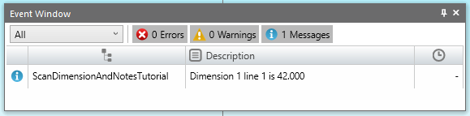

In the Tutorial: Scan Annotations, we saw that the Annotations collection could contain both Notes and Dimension objects. The Dimension objects themselves, then, would contain a Notes object. Both the Notes objects within the Annotations collection and the Notes object within each Dimension contains individual Note objects. Each Note object inside a Notes belonging to Annotations corresponds to one line of the Note. The Note objects inside of the Notes belonging to the Dimension will contain the dimension value and its tolerances, if any.
This tutorial shows how to find and display the information inside of all of these Notes.
Create some dimensions and text labels or open a file that contains some before running the code.
Tutorial outputs information to the EventWindow :
